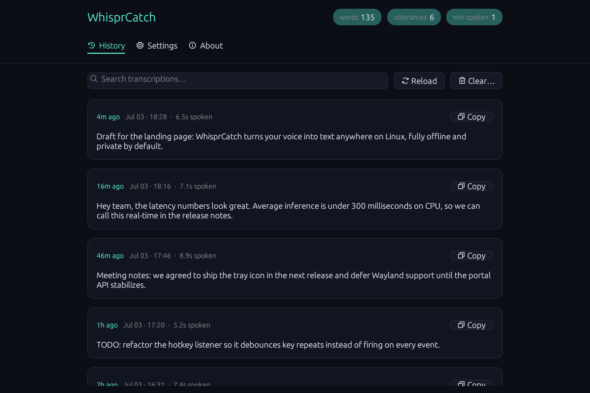
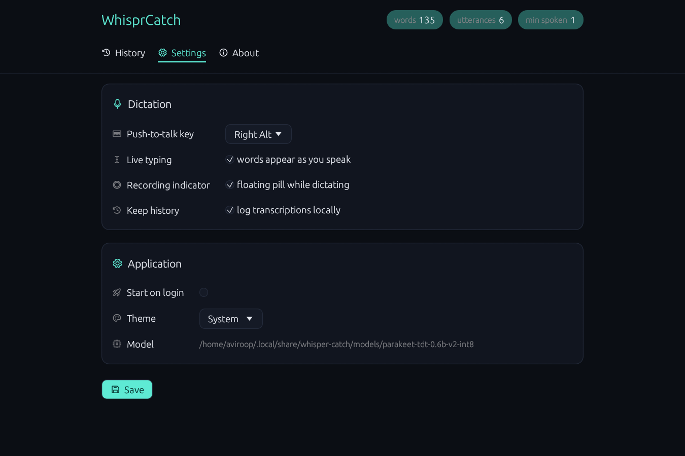

Speak. Release.
Text appears.
Push-to-talk dictation that runs entirely on your machine. No cloud, no subscription, no audio leaving your laptop.
hold Right Alt → speak → release
Free & open source · Linux x86-64 · No account, no cloud
How it works
Three moves. No windows.
No app to focus, no button to find. The hotkey is the whole interface.
Hold
Hold Right Alt anywhere — any app, any text field. Nothing to launch, nothing to click.
Speak
Say what you mean. A small pill shows it's listening — that's the only UI you see.
Release
Punctuated, capitalized text lands at your cursor in under half a second.
Features
Why WhisprCatch
100% on-device
NVIDIA Parakeet 0.6B running locally via ONNX Runtime. Beats Whisper large-v3 on English accuracy — with zero network calls.
Fast on CPU
~25× realtime on a modern laptop CPU. A ten-second sentence lands in about 400 ms. No GPU required.
Punctuation that just works
Native capitalization and punctuation from the model. No lowercase word soup to clean up afterwards.
Types anywhere
Editors, browsers, chat apps, terminals — text is injected at your cursor in whatever has focus.
Tray-native
Lives in your top bar. Toggle listening, watch session stats, open history & settings — one click away.
Your data stays yours
Optional local transcription history you can browse, copy from, and wipe. It's a file on your disk, nothing more.
Privacy
Your voice never leaves this laptop.
Most dictation tools are microphones wired to someone else's data center. WhisprCatch is a model on your CPU.
Cloud dictation
Their servers- Audio is uploaded to servers you don't control
- Account required, usually a subscription too
- Dead the moment your connection drops
- Transcripts live in a dashboard, under their retention policy
- Latency is your network plus their queue
WhisprCatch
This laptop- Audio is decoded on your CPU, in memory — zero network calls during dictation
- No account. No subscription. MIT-licensed.
- Fully offline after a one-time model download
- History is a plain file on your disk. Read it, grep it, delete it.
- 0.31 s inference on an 8-second clip. No round trip.
Install
Install in a minute.
- Download the .deb
One file, Ubuntu/Debian x86-64.
- Double-click to install
Or open it with your software center.
- Launch WhisprCatch
A setup wizard handles keyboard permission and the model download — no terminal needed.
First launch downloads the ~660 MB speech model, once. After that, everything is offline.
Prefer the terminal?
Screenshots
Small app. Smaller footprint.
A history you can search, a settings page you'll visit once, and a pill you'll see every day.


FAQ
Questions
Does it work offline?
Yes — completely. The speech model runs on your CPU via ONNX Runtime, and dictation makes zero network calls. The only download ever is the ~660 MB model, once, during setup. Verify it yourself: the code is open, or watch the process with a network monitor while you dictate.
Which languages does it support?
English today. The bundled model, NVIDIA Parakeet 0.6B, outperforms Whisper large-v3 on English benchmarks at a fraction of the size. Additional languages are on the roadmap as strong local models become available.
Wayland or X11?
X11 today — text injection and the global hotkey use X11 APIs. On GNOME you can pick "Ubuntu on Xorg" at the login screen. Wayland support is planned.
What about macOS or Windows?
Linux only for now (Ubuntu/Debian, x86-64). A macOS build is planned. If you want it sooner, say so in a GitHub issue — it helps set priorities.
Is it open source?
Yes — MIT licensed, end to end. The hotkey listener, the audio pipeline, the model runner, the text injection: every line is on GitHub to read, audit, and fork.